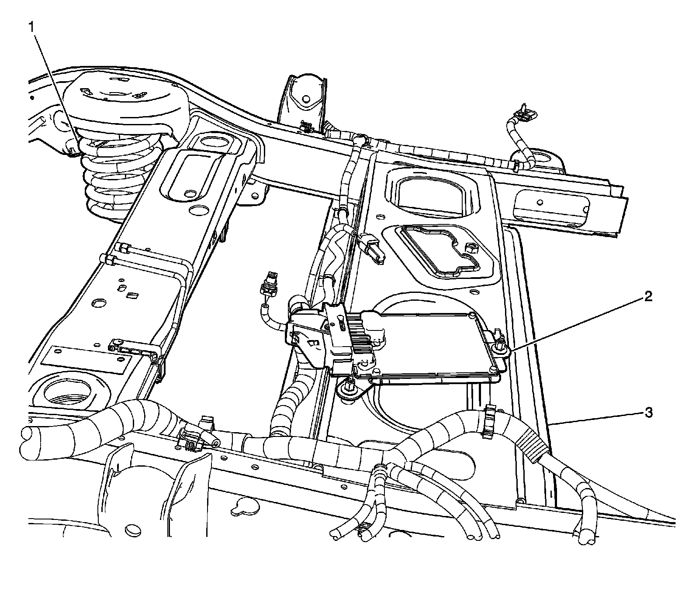

Operation CHARM
: Car repair manuals for everyone.
Home
>>
Cadillac
>>
2007
>>
Escalade ESV AWD V8-6.2L
>>
Repair and Diagnosis
>>
Steering and Suspension
>>
Suspension
>>
Suspension Control ( Automatic - Electronic )
>>
Suspension Control Module
>>
Locations
Suspension Control Module: Locations
Electronic Suspension Control Component Views
Above the Spare Tire:

1
- RR Coil Spring
2
- Electrical Suspension Control (ESC) Module (Z55)
3
- Chassis